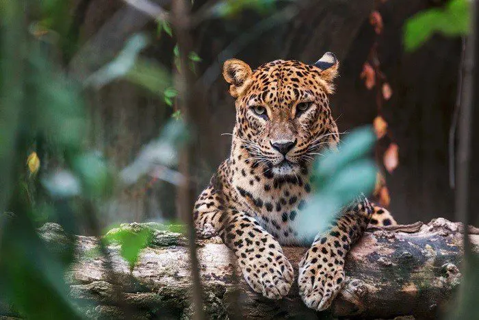
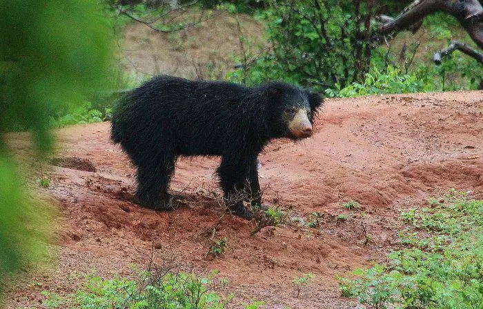
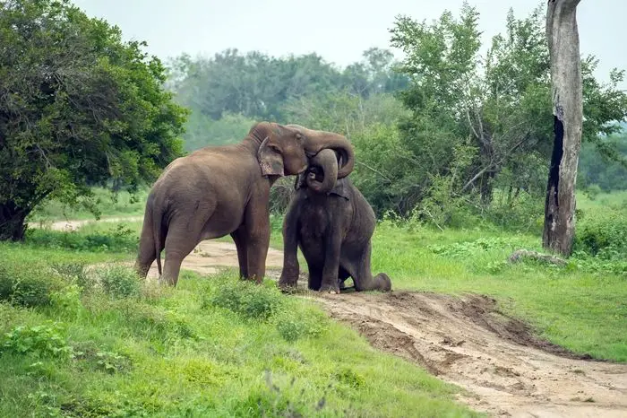

If you enjoy wildlife, Yala National Park is one of the best places to visit in Sri Lanka. This national park, located in the country's south, is known for having the largest population of leopards anywhere on the planet. Although sightings cannot be guaranteed because they are wild animals, the park's leopard population density provides you a reasonable chance of seeing one of these secretive beasts. As a result, Yala is undoubtedly Sri Lanka's most visited national park. Leopards aren't the only amazing creatures to be found here. Elephants, sloth bears, crocodiles, jackals, water buffalo, and the Sri Lanka grey hornbill are among the numerous animals present here. Yala National Park covers an area of over 12,600 square kilometers, yet only around a fifth of it is open to visitors, which is wonderful for wildlife. A portion of this national park is located on the coast and serves as a nesting place for many sea turtle species, including the Olive Ridley and Leatherback turtles.
Wilpattu National Park is a national park in Sri Lanka (Willu-pattu, "Land of Lakes"). The presence of "Willus" (natural lakes) - natural, sand-rimmed water basins or depressions that fill with rains - is a distinctive characteristic of this park. The park is 30 kilometers (19 miles) west of Anuradhapura and 26 kilometers (16 miles) north of Puttalam (about 180 kilometers (110 miles) north of Colombo). Wilpattu National Park is Sri Lanka's largest and oldest national park. Leopards (Panthera pardus kotiya) and Sloth bears are the most popular attractions in Wilpattu (Melursus ursinus). Asian Elephants (Elephas maximus), Spotted Deer, Barking Deer, jackals, sambhur, barking deer, mouse deer, Wild Pig, Water Buffalo (Bubalus bubalis), and Mugger Crocodiles are among the other mammals.
Minneriya National Park, commonly known as Minneriya Safari Park Sri Lanka, was founded on August 12, 1997 (Gazette Notification No. 988/4), and is a popular destination for wildlife holidays and family adventure trips in Sri Lanka. The old Minneriya - Giritale Sanctuary is now part of Minneriya National Park, which spans 8,890 hectares. Minneriya National Park, in the district of Polonnaruwa (Pulathisi Pura) in the North Central Province of Sri Lanka, is well renowned for its incredible elephant gathering, which is considered one of Asia's best wildlife encounters. Further Minneriya National Park is one of Sri Lanka's 70 IBAs, or Important Bird Areas, and is a popular destination for bird viewing trips. The park's 24 animal species include elephants, spotted deer, sambar deer, wild buffalo, wild pig, grey langers, purple-faced leaf monkeys, three types of mongoose, porcupine, and Indian pangolin. Minneriya National Park is home to around 170 different bird species.
| Animals | Images | Habits |
|---|---|---|
| Sri-Lankan leopard |  |
Scientific Name: Panthera Pardus Size: 3 ft. 5 in (head to body) and 2 ft. 6.5 in (tail) Weight: 56 kg (male) and 29kg (female) Diet: Carnivore Conservation Status: Endangered |
| Sri-Lankan Sloth Bear |  |
Scientific Name: Melursus ursinus Size: 5 to 6 ft. (body) and 2.7 to 4.7 in (tail) Weight: 54 to 141kg Diet: Omnivore Conservation Status: Vulnerable |
| Sri-Lankan Elephant |  |
Scientific Name: Elephas maximus Size: 2.4 to 2.7m (height) Weight: 2,000 kg to 5,400 kg Diet: Herbivore Conservation Status: Endangered |
| All the contents are reffers from https://www.thingstodosrilanka.com/5-types-of-animals-you-can-see-in-yala/ |
||